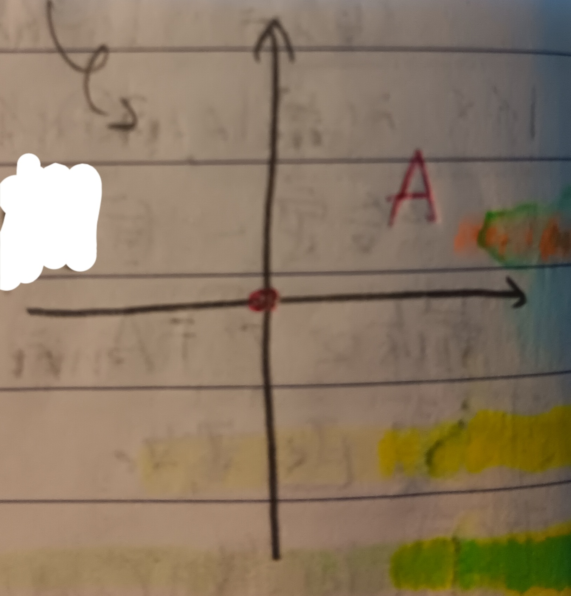

這份筆記是關於拓樸的基本概念與工具。
度量與範數
定義 1：度量 (Metric)
給定映射\(d:S\times
S\to\mathbb{R}\)，若\(d\)滿足以下四點，則我們稱\(d\)為\(S\)上的度量(或稱距離 (Distance))。
1.
對於所有\(x,y\in S\)，有\(d(x,y)\geq 0\)。
2. 對於所有\(x\in S\)，有\(d(x,x)=0\)。
3. 對於所有\(x,y\in S\)，有\(d(x,y)=d(y,x)\)。
4. (三角不等式)
對於所有\(x,y,z\in S\)，有 \[
d(x,z)\geq d(x,y)+d(y,z)
\]
例 1-1：歐幾里得距離 (Euclidean Distance)
對於\(x=(x_1,x_2,\cdots,x_n), y=(y_1,y_2,\cdots,y_n)\in\mathbb{R}^n\)，我們令 \[ d=\sqrt{\sum_{i=1}^n(x_i-y_i)^2} \] 可以檢驗\(d\)是\(\mathbb{R}^n\)中的度量，我們稱其為歐幾里得距離。

例 1-2
對於\(x=(x_1,x_2,\cdots,x_n), y=(y_1,y_2,\cdots,y_n)\in\mathbb{R}^n\)，我們令 \[ d=\sqrt[4]{\sum_{i=1}^n(x_i-y_i)^4} \] 可以檢驗\(d\)是\(\mathbb{R}^n\)中的度量。
例 1-3
若\(d\)是集合\(S\subseteq\mathbb{R}^n\)上的度量，則可以檢驗對於\(\lambda>0\)，\(\overline{d}=\lambda d\)也是\(\mathbb{R}^n\)上的度量。
例 1-4
若\(d\)是集合\(S\subseteq\mathbb{R}^n\)上的度量，則可以檢驗 \[ \tilde{d}=\frac{1+d}{d} \] 也是\(\mathbb{R}^n\)上的測度。
定義 2：範數 (Norm)
考慮\(\mathbb{R}\)上的向量空間\(S\subseteq\mathbb{R}^n\)，並考慮\(S\)上的度量\(d\)。若對於所有\(x,y\in S,\alpha\in\mathbb{R}\)有 \[ d(\alpha x,\alpha y)=|\alpha|d(x,y) \] 則稱\(d\)為\(S\)上的範數。
定義 2-1：賦範線性空間 (Normed Linear Space)
我們稱定義2中的\((S,d)\)為賦範線性空間。
例 2-2：離散距離 (Discrete Distance)
令\(S=\mathbb{R}^2\)，並定義其上的離散距離為 \[ d(x,y)=\left\{ \begin{aligned} 0&,\mbox{ if }x\neq y\\ 1&,\mbox{ if }x=y \end{aligned} \right.\;\;\;,x,y\in\mathbb{R}^2 \] 可以很容易發現\(d\)雖然在\(S\)上是度量但不是一個範數。
例 2-3
可以檢驗例1-1中的歐幾里得距離就是\(S\)上的範數。
例 2-4：1-範數 (One-Norm)
對於\(x=(x_1,x_2,\cdots,x_n), y=(y_1,y_2,\cdots,y_n)\in\mathbb{R}^n\)，我們定義\(\mathbb{R}^n\)上的\(1\)-範數為 \[ d_1(x,y)=\sum_{i=1}^n|x_i-y_i| \] 可以檢驗\(d_1\)是一個\(\mathbb{R}^n\)上的範數。
例 2-4：無窮範數 (Infinite-Norm)
對於\(x=(x_1,x_2,\cdots,x_n), y=(y_1,y_2,\cdots,y_n)\in\mathbb{R}^n\)，我們定義\(\mathbb{R}^n\)上的無窮範數為 \[ d_\infty(x,y)=\max_{1\leq i\leq n}|x_i-y_i| \] 可以檢驗\(d_\infty\)是一個\(\mathbb{R}^n\)上的範數。
例 2-5：p-範數 (p-Norm)
對於\(x=(x_1,x_2,\cdots,x_n), y=(y_1,y_2,\cdots,y_n)\in\mathbb{R}^n\)，\(p>1\)，我們定義\(\mathbb{R}^n\)上的\(p\)-範數為 \[ d_p(x,y)=\left(\sum_{i=1}^n|x_i-y_i|^p\right)^{1/p} \] 可以檢驗\(d_p\)是一個\(\mathbb{R}^n\)上的範數。
註記 2-5-1
之所以要\(d_\infty\)稱為無限範數是因為\(p\)-範數中當\(p\)趨近無限大時有\(d_p(x,y)\to d_\infty(x,y)\)。細節在此就略過了。
定義 2-5-2
在\(p\)範數中通常會記 \[ \|a\|_p=d_p(a,0) \] 更一般的，對於範數\(d\)，通常我們會記\(\|a\|=d(a,0)\)。
開集與閉集
定義 3：球 (Ball)
給定\(x\in\mathbb{R}^n\)並給定\(\mathbb{R}^n\)上的度量\(d\)，我們定義以\(x\)為中心、\(\epsilon>0\)為半徑的球為 \[ B_\epsilon(x)=\{y\in\mathbb{R}^n:d(y,x)<\epsilon\} \]
定義 4：開集 (Open Set)
給定集合\(A\subseteq\mathbb{R}^n\)。若對於所有\(x\in A\)都存在\(\epsilon>0\)使得\(B_\epsilon(x)\subseteq A\)，則稱\(A\)是開集。
性質 4-1
任意多個(包含無限多個)開集的聯集還是開集。
證明：對於\(i\in I\)，令\(A_i\)為開集並令 \[ A=\bigcup_{i\in I}A_i \] 對於任意\(x\in A\)，應有\(i\in I\)使得\(x\in A_i\)。由於\(A_i\)是開集，故應存在\(\epsilon>0\)使得\(B_\epsilon(x)\subseteq A_i\subseteq A\)。於是可知\(A\)亦是開集。QED
性質 4-2
有限多個開集的聯集還是開集。
證明：對於\(1\leq i\leq n\)，令\(A_i\)為開集並令 \[ A=\bigcap_{i=1}^n A_i \] 則對於\(x\in A\)，應對於所有\(1\leq i\leq n\)都有\(x\in A_i\)。由於\(A_i\)是開集，故應存在\(\epsilon_i>0\)使得\(B_{\epsilon_i}(x)\subseteq A_i\)。接著令 \[ \epsilon=\min\{\epsilon_1,\epsilon_2,\cdots,\epsilon_n\} \] 則對於所有\(1\leq i\leq n\)都應有\(B_\epsilon(x)\subseteq B_{\epsilon_i}(x)\subseteq A_i\)，故有\(B_\epsilon(x)\subseteq A\)。對於所有\(x\in A\)都可以找到這樣的\(\epsilon>0\)，故\(A\)是開集。QED
例 4-3
對於任意\(x\in\mathbb{R}^n\)，\(\epsilon>0\)，球\(B_\epsilon(x)\)都是\(\mathbb{R}^n\)中的開集。
證明：對於任意\(y\in B_\epsilon(x)\)，令 \[ r=\frac{1}{2}\min\{\|x-y\|,\epsilon-\|x-y\|\} \] 其中\(\|x-y\|=d(x,y)\)是給定的範數。則由下圖2可知\(B_r(y)\subseteq B_\epsilon(x)\)，即\(B_\epsilon(x)\)是開集。QED
例 4-4
無限多個開集的聯集不一定是開集。在\(\mathbb{R}\)上考慮 \[ A_n=B_{1/n}(0)=\left(-\frac{1}{n},\frac{1}{n}\right) \] 由例4-3知\(A_n\)都是開集。但 \[ \bigcap_{n=1}^\infty A_n=\{0\} \] 可以發現這顯然不是開集。
例 4-5
在\(\mathbb{R}^n\)上給定範數\(\|a\|=d(a,0)\)，並考慮 \[ A=\{y\in\mathbb{R}^n:0<\|y\|<1\} \] (即去掉球心的單位球)則對於所有\(z\in A\)，令 \[ r=\frac{1}{2}\min\{\|z\|,1-\|z\|\} \] 類似例4-3可以發現\(B_r(z)\subseteq A\)，即\(A\)是開集。
性質 4-6
由定義可以知道空集合與宇集合都應該是開集。
定義 5：閉集 (Closed Set)
給定宇集合\(\Omega\)與集合\(B\subseteq\Omega\)。若\(\Omega/B\)是開集，則說\(B\)是閉集。
性質 5-1
由定義與性質4-6可知宇集合與空集合都應是閉集。
性質 5-2
任意多個(包含無限多個)閉集的交集還是閉集。
證明：對性質4-1的證明過程取與宇集合的差集即可。QED
性質 5-3
有限多個閉集的聯集還是閉集。
證明：對性質4-2的證明過程取與宇集合的差集即可。QED
內點與邊界
定義 6：內點 (Interior Point)
給定集合\(A\subseteq\mathbb{R}^n\)，若對於\(x\in A\)，存在開集\(B\)使得\(x\in B\)且\(B\subseteq A\)，則稱\(x\)是\(A\)的內點。並且，我們將\(A\)所有內點的集合記為\(\mathring{A}\)。
定義 6-1：內部 (Interior)
定義6中的\(\mathring{A}\)一般稱為\(A\)的內部。
註記 6-2：內點的等價定義
由定義易知若\(x\)是\(A\)的內點若且唯若存在\(\epsilon>0\)使得\(B_\epsilon(x)\subseteq A\)。
註記 6-3
對於集合\(A\subseteq\mathbb{R}^n\)，由定義知\(\mathring{A}\)是所有\(A\)的開子集的聯集，即 \[ \mathring{A}=\bigcup_B(B\subseteq A, B\mbox{ is open.}) \]
例 6-4
令 \[ A=\{(x,y)\in\mathbb{R}^2:|x|+|y|\leq 1\} \] 則 \[ \mathring{A}=\{(x,y)\in\mathbb{R}^2:|x|+|y|<1\} \]
例 6-5
令 \[ A=\{(x,y)\in\mathbb{R}^2:x^2+y^2\leq 1\} \] 則 \[ \mathring{A}=\{(x,y)\in\mathbb{R}^2:x^2+y^2<1\} \]
例 6-6
考慮例2-2中的離散距離\(d\)。令 \[ A=\{a\in\mathbb{Z}^2:d(a,\mathbb{O})\leq 1/2\} \] 其中\(\mathbb{O}=(0,0)\in\mathbb{Z}^2\)。很明顯的\(A=\{\mathbb{O}\}\)。而對於所有\(0<\epsilon<1\)，我們有 \[ B_\epsilon(\mathbb{O})=\{\mathbb{O}\} \] 即和\(\mathbb{O}\)小於\(1\)的點只有\(\mathbb{O}\)自己，其他點和\(\mathbb{O}\)的距離都是\(1\)。故\(A\)雖然只有一個點，但其亦是內點(見下圖3)。
例 6-7
一樣考慮例2-2中的離散距離\(d\)，令 \[ A=\{a\in\mathbb{Z}^2:d(a,\mathbb{O})\leq 1\} \] 則\(A=\mathbb{Z}^2\)。類似例6-6，若令\(\epsilon=\frac{1}{2}\)，則對於所有\(x\in\mathbb{Z}^2=A\)都有\(B_\epsilon(x)=\{x\}\)。即\(A=\mathbb{Z}^2\)中每個點都是內點。
定義 7：閉包 (Closure)
對於集合\(A\subseteq\mathbb{R}^n\)，定義\(A\)的閉包\(\overline{A}\)為所有包含\(A\)的閉集的交集，即 \[ \overline{A}=\bigcap_B(A\subseteq B, B\mbox{ is closed.}) \]
註記 7-1：閉包的等價定義
\(A\)的閉包\(\overline{A}\)即是包含\(A\)的最小閉集合(「最小」的意思就是所有包含\(A\)的閉集都應包含\(\overline{A}\))。
例 7-2
考慮\(\mathbb{R}^2\)中歐幾里得距離下的球 \[
B_1(0)=\{a\in\mathbb{R}^2:\|a\|<1\}
\] 則\(\overline{B_1(0)}=\{a\in\mathbb{R}^2:\|a\|\leq
1\}\)。
證明：我們分兩部分說明。
1.
我們想說明\(\{a\in\mathbb{R}^2:\|a\|\leq
1\}\)是閉集。考慮其補集\(A=\{a\in\mathbb{R}^2:\|a\|>1\}\)。對於任意\(x\in A\)，令\(\|x\|=1+q\)，其中\(q>0\)。則令\(\epsilon=\frac{q}{2}\)，則由三角不等式知對於\(y\in B_\epsilon(x)\)有 \[
\|y\|\geq\|x\|+\|y-x\|\geq 1+q-\epsilon=1+\frac{q}{2}
\] 故\(y\in A\) i.e. \(B_\epsilon(x)\subseteq
A\)。於是，我們知道\(A\)是開集，故其補集\(\{a\in\mathbb{R}^2:\|a\|\leq
1\}\)應是閉集。
2. 我們想說明\(\{a\in\mathbb{R}^2:\|a\|\leq
1\}\)是所有包含\(B_1(0)\)的閉集中最小的。考慮任意一個閉集\(B\supseteq B_1(0)\)。我們知道\(\mathbb{R}/B\)應是開集，且 \[
\mathbb{R}^2/B\subseteq\mathbb{R}^2/B_1(0)=\{a\in\mathbb{R}^2:\|a\|\geq
1\}
\] 假設\(\mathbb{R}^2/B\)中有點\(x\)滿足\(\|x\|=1\)，則由於這裡用的是歐幾里得距離，故對於所有\(\epsilon>0\)都會有\(y\in B_\epsilon(x)\)使得\(\|y\|\leq
1\)(可以用平面圖形去思考這件事)，矛盾。故應有 \[
\mathbb{R}^2/B\subseteq\{a\in\mathbb{R}^2:\|a\|>1\}
\] 即\(B\supseteq\{a\in\mathbb{R}^2:\|a\|\leq
1\}\)。故可知\(\{a\in\mathbb{R}^2:\|a\|\leq 1\}\)是\(B_1(0)\)的閉包。QED
定義 8：邊界 (Boundary)
對於集合\(A\subseteq\mathbb{R}^n\)，令其補集為\(A^c\)，則定義\(A\)的邊界為 \[ \partial A=\overline{A}\cap\overline{A^c} \]
定義 8-1：邊界點 (Boundary Point)
在定義8中，若點\(x\)落在邊界\(\partial A\)中，則稱\(x\)為\(A\)的邊界點。
註記 8-2：邊界的等價定義
對於集合\(A\in\mathbb{R}^n\)，有\(\partial
A=\overline{A}/\mathring{A}\)。
證明：